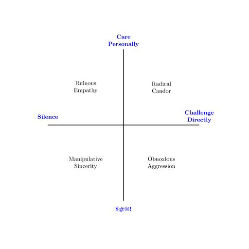

<meta name="viewport" content="width=device-width, initial-scale=1">
<title>2x2 Template</title>
<main>
  <h1>2x2 Template</h1>
  <figure>
    
    <figcaption>Example 2x2 based on Kim Malone Scott's <em>Radical Candor</em></figcaption>
  </figure> 
  <p>This is how I use LaTeX to generate 2x2s</p>
  <pre>
\documentclass[a5paper]{article}
\usepackage[utf8]{inputenc}
\usepackage[a5, portrait, margin=19mm]{geometry}
\usepackage{multicol}
\pagenumbering{gobble}
\date{}
\usepackage{xcolor}

\setlength\unitlength{1cm}

\newcommand{\axislabel}[1]{\makebox(0,0){\parbox{3cm}{\centering\color{blue}{\textbf{#1}}}}}
\newcommand{\underlinebf}[1]{\underline{\textbf{#1}}}
\newcommand{\quadrantbox}[1]{{\makebox(4.5,4.5){\parbox{3.75cm}{\centering#1}}}}
\newcommand{\quadranttitle}[1]{\underlinebf{#1}}
\newcommand{\quadrantbody}[1]{\linebreak\linebreak#1}

\begin{document}

\begin{center}
\vspace*{\fill}
\begin{picture}(9,9)

\linethickness{1pt}

\put(0,4.5){\line(1,0){9}}
\put(0,5){\axislabel{Silence}}
\put(9,5){\axislabel{Challenge Directly}}

\put(4.5,0){\line(0,1){9}}
\put(4.5,9.5){\axislabel{Care\\Personally}}
\put(4.5,-.5){\axislabel{\$\#@!}}

\put(0,4.5){\quadrantbox{ 
  \quadrantbody{Ruinous\\Empathy}
}}
\put(4.5,4.5){\quadrantbox{
  \quadrantbody{Radical\\Candor}
}}
\put(0,0){\quadrantbox{ 
  \quadrantbody{Manipulative\\Sincerity}
}}
\put(4.5,0){\quadrantbox{ 
  \quadrantbody{Obnoxious\\Aggression}
}}

\end{picture}
\vspace*{\fill}
\end{center}

\end{document}
  </pre>
</main>
<footer><hr><aside>Last modified Friday, June 17, 2022</aside></footer>
